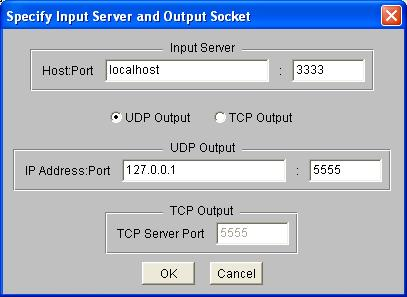

DataTurbine Player Utility
rbnbPlayer
User Manual
V2.01
June 16, 2005
Copyright, Creare Inc.
Table of Contents
Overview
Setup and Startup
Input DataTurbine
Output DataTurbine
Use Settings File
Menu Bar
File Menu
Open (RBNB Output)
Open (IP Output)
Close
Exit
View Menu
Channels
Position
Duration
Increment
Rate
Time Format
Unformatted
Seconds
Player Control Buttons
Beginning of Data
Play Backwards
Step Backwards
Pause
Step Forwards
Play Forwards
End of Data
Realtime
Player Control Sliders
Position
Duration
Increment
Rate
Introduction
Overview
The rbnbPlayer utility allows users to control the playback of
data
from one or more input DataTurbine channels
to one of the following: (1) one or more output DataTurbine channels;
(2) a UDP socket; or (3) to any number of connected TCP clients.
When outputting to DataTurbine channels, by
convention the
output
datapath is named "rbnbPlayer[_<unique number>]"; the final
"_<unique
number>" is appended to the datapath if one or more instances of rbnbPlayer
are already connected to the output DataTurbine. Requests are
sent to the input DataTurbine corresponding to the user settings.
Data is then obtained from the input DataTurbine and either sent to the
output DataTurbine, to the UDP socket, or to all connected TCP clients.
The rbnbPlayer utility uses either the command
line or the graphical user interface to setup
its
input and output connections. Through the
graphical
interface, the user may choose which channels to read data from, and
may
configure the display. The user controls the playback of data via
a set of buttons and sliders.
The following figure shows an example rbnbPlayer session:
- Example rbnbPlayer Session
Setup and Startup
The rbnbPlayer application needs to be run under a Java Virtual
Machine (JVM). Different flavors of Java come by different names
(e.g. java, jre, jview).
At startup, the rbnbPlayer program permits the user to
specify the input and output connections. After establishing
the connections, rbnbPlayer displays a list of available input
channels.
Once the user has selected a set of channels to control, the buttons
and
sliders in the graphical interface activate.
The user may start rbnbPlayer from the command-line or from
the
WebTurbine web browser interface.
If a file named "PlayerSettings.dat" exists in the directory from which
rbnbPlayer
is run, rbnbPlayer will use it to store and retrieve its
settings
from one session to the next.
Command Line Arguments
Input DataTurbine
-r [host][:port]
This argument specifies which DataTurbine holds the input
channels.
The default is to set the input DataTurbine to localhost:3333, but not
to automatically open the connection.
Output DataTurbine
-w [host][:port]
This argument specifies which DataTurbine to write the output
channels
to. The default is to set the output DataTurbine equal to the
input
DataTurbine.
Use Settings File
-f
This argument signals rbnbPlayer to use the file named
"PlayerSettings.dat"
to store and retrieve its settings. The file must already exist
in
the directory from which rbnbPlayer is run.
User Interface
Menu Bar
At the top of the graphical interface screen is the
menu bar. The menu bar has three menus: File
Menu, View
Menu, and Time Format Menu.
File Menu
The file menu has options to open connections to the input and output
DataTurbines
(Open (RBNB Output)), to open a
connection to the input DataTurbine and output IP socket (Open (IP Output)), to
close connections
(Close), and to exit the program (Exit).
Open (RBNB Output)
The Open (RBNB Output) menu item on the File Menu
opens connections to input and output DataTurbines. rbnbPlayer
pops up a dialog box to ask for the names and ports of the
DataTurbine.
The following is an example of the host names and ports dialog:
- Example rbnbPlayer Hosts and Ports Dialog
for RBNB Input and Output
Open (IP Output)
The Open (IP Output) menu item
on the File
Menu
opens connections to an input DataTurbine and to either an output UDP
socket or a TCP server socket. rbnbPlayer
pops up a dialog box to ask for the DataTurbine host and port.
The user can select either UDP Output
or TCP Output. If UDP Output is selected, then the
user must enter an IP address and port, specifying the address to send
the UDP packets. If TCP Output
is selected then the user must enter a TCP server port. If TCP
Output is selected, rbnbPlayer will
open a server socket at the specified port. Any number of TCP
clients can connect to this server socket; each client will receive a
copy of the RBNB data.
The following is an example of the host names and ports dialog:

- Example rbnbPlayer Hosts and Ports Dialog
for RBNB Input and IP Output
Close
The Close menu item on the File Menu closes
any
open connections.
Exit
The Exit menu item on the File Menu exits
the rbnbPlayer
program.
View Menu
The view menu has options to select input
channels, and to
configure
the graphical interface.
Channels
The Channels menu item on the View Menu pops
a
dialog
for viewing and selecting input DataTurbine channels. The user
clicks
on the names of individual channels to select or deselect them, or the
user may press the All or None buttons to select or deselect all
available
channels. When the "Select Range of Channels" checkbox is
checked,
the user may designate a range of channels for selection or deselection
by clicking once on each of the ends of the range. The OK button
commits the user's choices.
When outputting data to a DataTurbine, the output datapath is
"rbnbPlayer[_<unique number>]"; the
final
"_<unique number>" is appended to the datapath if one or more
instances
of rbnbPlayer are already connected to the output
DataTurbine. The output
channels
will have the same name as the input channels. Therefore, the
user may not
select
multiple input channels with the same channel name.
When outputting data to UDP or TCP, the user is restricted to
selecting only one RBNB channel for input.
The following is an example of the channel selection dialog:
- Example rbnbPlayer Channel Selection Dialog
Position
The Position menu item on the View Menu
controls
the visibility of the Position slider and display.
Duration
The Duration menu item on the View Menu
controls
the visibility of the Duration slider and display.
Increment
The Increment menu item on the View Menu
controls
the visibility of the Increment slider and display.
Rate
The Rate menu item on the View Menu controls
the
visibility of the Rate slider and display.
Time Format Menu
The time format menu contains a list of radio-button options (only one
option can be chosen from the list) which instruct rbnbPlayer how the time information
on the input channels should be interpreted.
Unformatted
The Unformatted radio selection on the Time
Format Menu directs rbnbPlayer
to interpret the time information from the input channels as generic
floating point numbers. In rate and timing calculations performed
within rbnbPlayer, units of
seconds are still assumed. That is, a change in the input time
value of 1.0 is used as a 1.0 second increment in rbnbPlayer's internal calculations.
Seconds
The Seconds radio selection on the Time
Format Menu directs rbnbPlayer
to interpret the time information from the input channels as seconds.
Player Control Buttons
Towards the top of the graphical interface are a
set
of buttons for taking particular actions: reading the beginning or end
of the input data, playing or single-stepping forwards and backwards,
pausing,
and realtiming.
Beginning of Data
The Beginning of Data button will playback the earliest data currently
available; note that this may result in data being read from some
channels
but not from others.

- Beginning of Data Button
Play Backwards
The Play Backwards button will playback the data starting at the
current
Position
and moving backwards to the earliest available data, in increments set
by the Increment slider. At each step
of
play, a frame with a duration specified by the Duration
slider will be output. rbnbPlayer will attempt to play at
the rate set by the Rate slider.
- Play Backwards Button
Step Backwards
The Step Backwards button will playback a single step of data from the
current Position backwards. The
duration
of the step is set by the Duration slider.
- Step Backwards Button
Pause
The Pause button stops the current action and halts the output of data.

- Pause Button
Step Forwards
The Step Forwards button will playback a single step of data from the
current
Position
forwards. The duration of the step is set by the Duration
slider.

- Step Forwards Button
Play Forwards
The Play Forwards button will playback the data starting at the current
Position
and moving forwards to the latest available data, in increments set by
the Increment slider. At each step of
play,
a frame with a duration specified by the Duration
slider will be output. rbnbPlayer will attempt to play at
the rate set by the Rate slider.

- Play Forwards Button
End of Data
The End of Data button will cause the latest data currently
available to be output;
note that this may result in data being read from some channels but not
from others.

- End of Data Button
Realtime
The Realtime button repeatedly fetches the latest available data; note
that this may result in data being read from some channels but not from
others. No unique output frame will be written out more than
once,
and the starttime of each new output frame will be later than the
previous
by an amount set by the Increment slider.
Note that the Rate slider is disabled
during
Realtime play. During Realtime play, the rate slider displays the
ratio of the
difference in time between subsequent input data to the "wall-clock"
time. In this case, the ideal value is 1.0.
- Realtime Button
Player Control Sliders
The Player Control Sliders are used to specify and view the position
within the data at which an action is occuring, the duration
of each output frame, the increment between
subsequent
output frames, and the rate of playback.
Position
The Position slider specifies the starttime for playing
and stepping. By dragging the
slider,
the user may also scan rapidly through the dataset.
The time of the current
position
is displayed above the slider. Additionally, the slider itself
moves
in response to user action, to show the user where the position
currently
is within the whole input dataset.
- Position Slider and Display
Duration
The Duration slider specifies the desired duration for each output
frame.
Note that it is possible for rbnbPlayer to output a frame whose
length is less than the specified duration. The desired duration
is displayed above
the
slider. Moving the slider all the way to the left edge puts rbnbPlayer into "single-point"
mode. In this mode, requests for single points of data are sent
to the DataTurbine. The Increment
slider is disabled in this mode.
- Duration Slider and Display
Increment
The Increment slider specifies the minimum acceptable difference
between
the starttimes of two successive output frames. The current
increment
is displayed above the slider. The units of the increment are
multiples of the duration.
- Increment Slider and Display
Rate
The Rate slider specifies the desired playback speed. The rate
indicates the desired ratio of the difference in time between
subsequent input data to the playback or "wall-clock" time. Note
that,
although it is possible to simultaneously control playback on channels
with different types of timestamps, ie. some channels stamped by
absolute
time since 1970 mixed with channels stamped with relative time, this is
not recommended.
The rate slider is always disabled during Realtime
play. During Realtime play, the rate slider continues to display
the ratio of the difference in time between subsequent input data to
the "wall-clock" time. In this case, the ideal value is 1.0.
The desired rate is displayed on the left above the slider.
The
actual playback rate, measured by rbnbPlayer, is displayed on
the
right above the slider, in italics.
- Rate Slider and Display
-